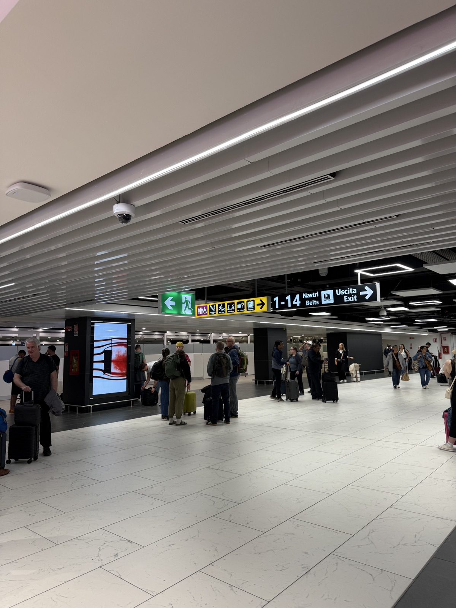
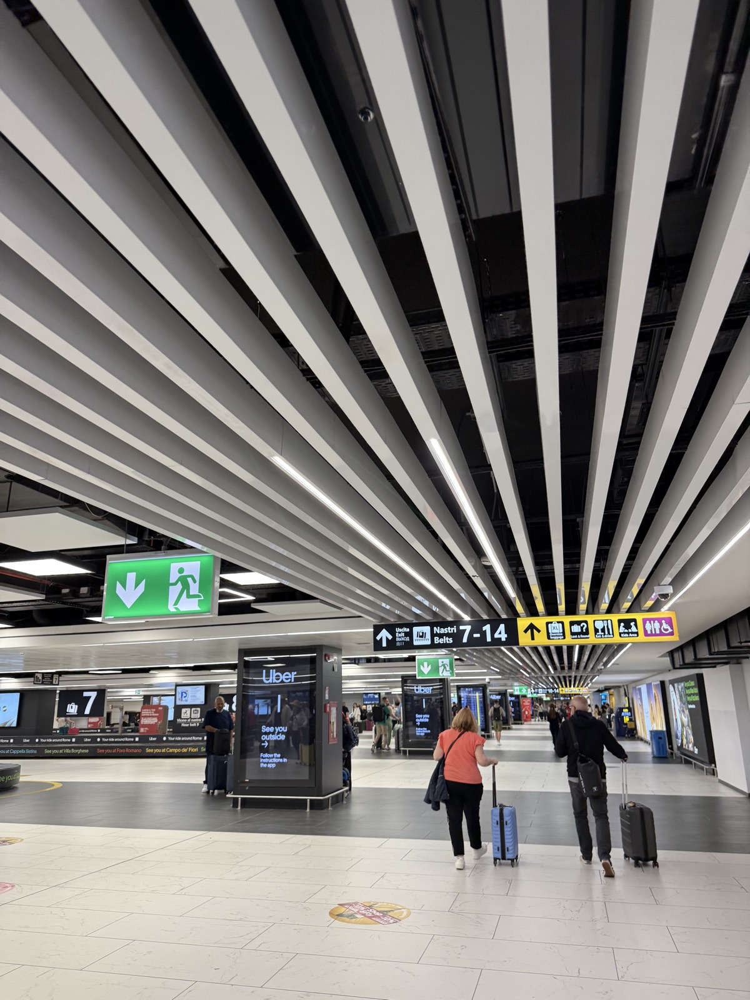
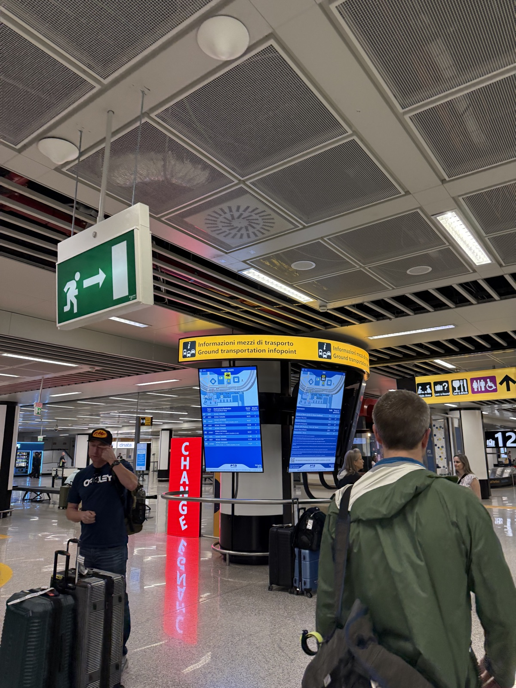
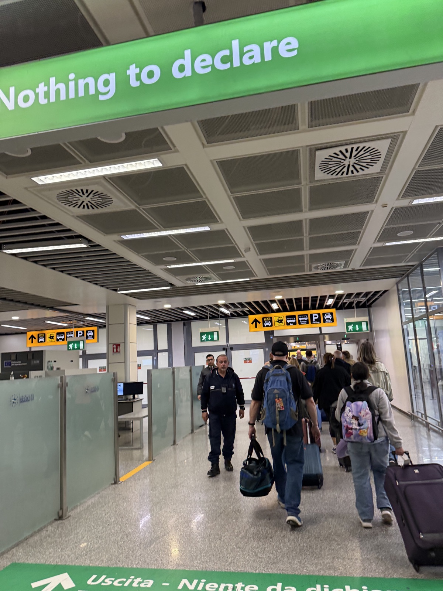
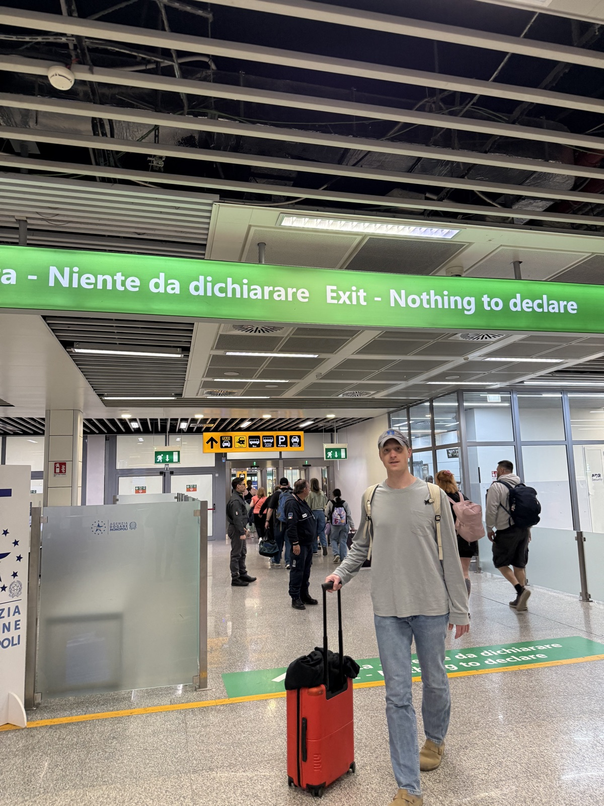
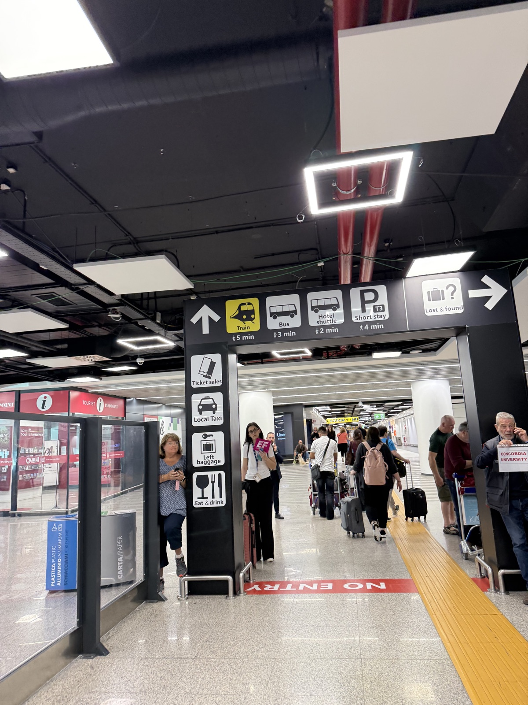
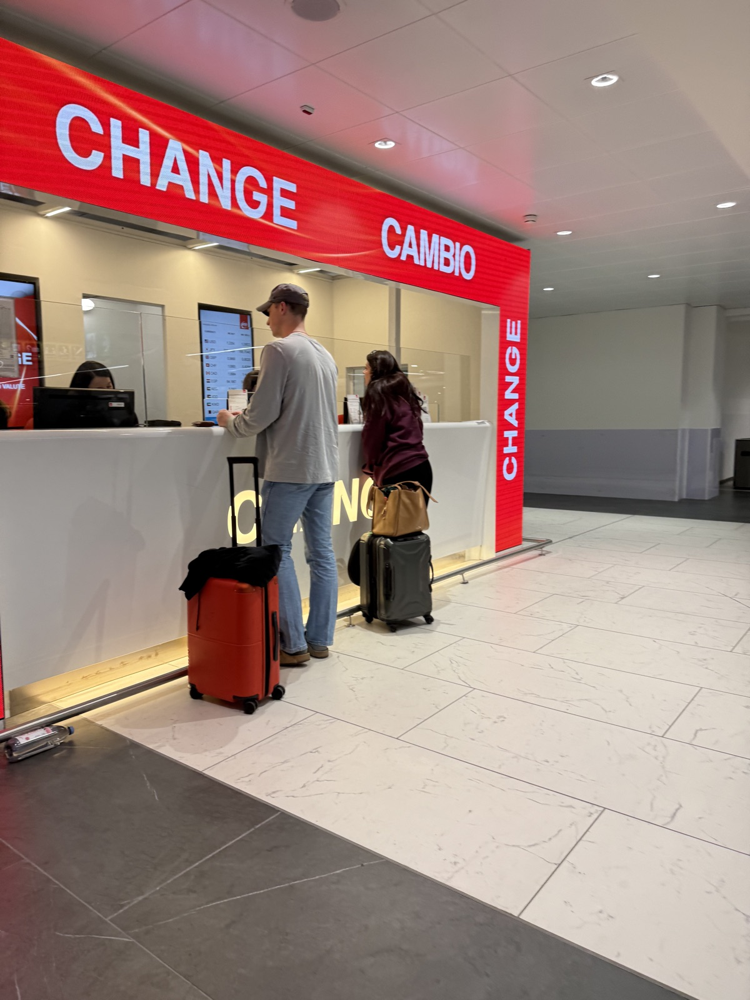
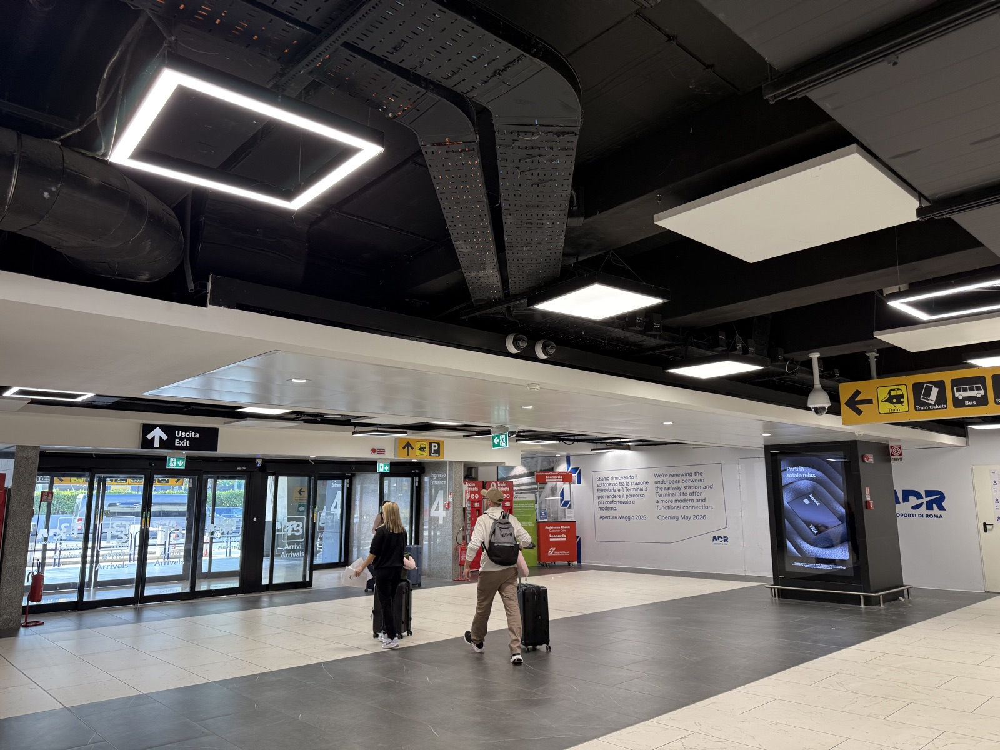
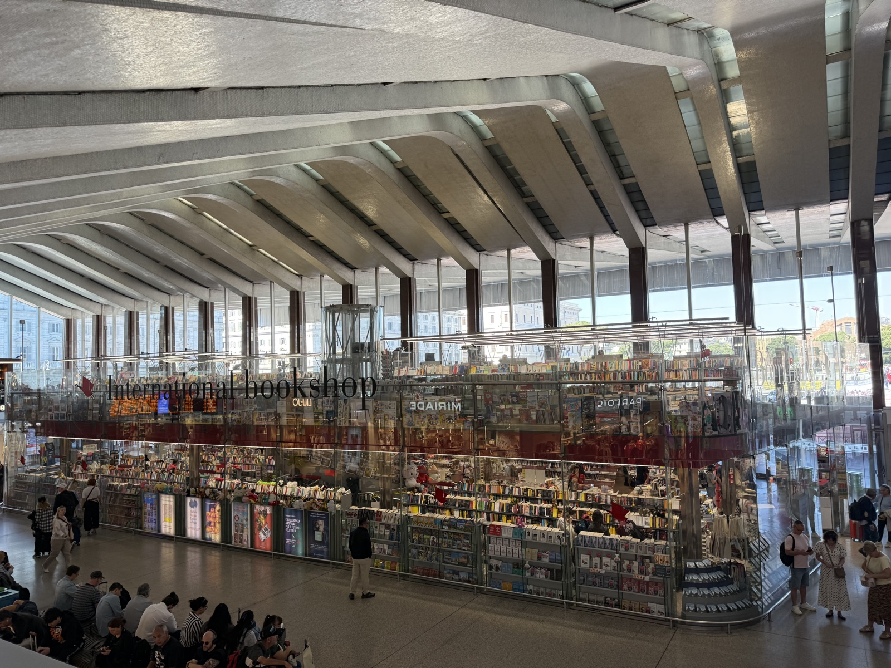

Once you land in Rome FCO airport, follow the Uscita / Exit and Train signs from baggage claim and you'll be led straight to the station, where you'll catch the Leonardo Express from FCO to the main Rome train station, Roma Termini. Here's what to look for, step by step.

Once you've grabbed your luggage from the belts (Nastri / Belts), look up for the yellow and white Uscita / Exit signs and head that way.

Continue through the terminal, staying with the Uscita / Exit signs and the green running-man exit arrows.

The green arrows lead you down toward the arrivals area. Just keep walking — the station is well signposted from here.

Take the green Nothing to Declare / Niente da dichiarare channel through customs. No need to stop unless you have something to declare.

Walk straight through — the green Exit / Nothing to Declare channel opens right into the arrivals hall.

In the arrivals hall, look for the signs pointing toward the Stazione / Treni (Railway Station / Trains) and follow them.

If you'd like some cash before your train, look for a Change / Cambio desk along the way. Ticket machines take cards, but a few euros are always handy.

Make your way through the doors and along the walkway that connects the terminal to the railway station.

Welcome to the station. Check the departure boards for your train, find your platform (binario), and you're on your way to the main Rome train station (Roma Termini). The Leonardo Express runs every 15min between the airport (FCO) and Roma Termini. For the Leonardo Express, you will need to buy a ticket from one of the kiosks. From Roma Termini you can catch a train to Siena, or wherever you are headed. We reccomend buying those tickets online ahead of time. Buon viaggio!